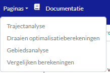
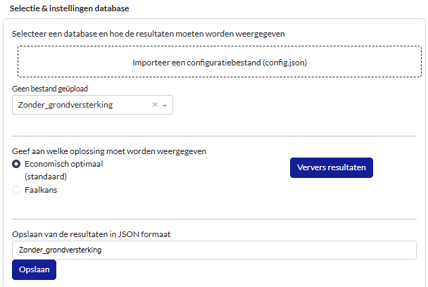

Dashboard - berekenen en vergelijken#
Uitvoeren van berekeningen via het dashboard#
Het is ook mogelijk om in het dashboard nieuwe berekeningen uit te voeren. Daarmee kunnen bijvoorbeeld maatregelen buiten beschouwing worden gelaten. Ga hiervoor bovenin de balk bij ‘Pagina’s’ naar het tabblad “Draaien optimalisatieberekeningen”.
Zet bij dijkvakken 24 en 28 de Grondversterking en Grondversterking met stabiliteitsscherm uit. Geef de berekening een naam (bijv. ‘Zonder_grondversterking’) en klik op ‘Start optimalisatieberekening’. Ga na uitvoeren van de berekening terug naar het tabblad “Trajectanalyse”.
Op deze pagina kan linksboven in plaats van ‘Basisberekening’ de nieuwe berekening worden geselecteerd (‘Zonder grondversterking’).
Oefenvragen:
Welke maatregelen zijn nu gekozen op dijkvakken 24 en 28?
klik hier om het antwoord te zien
Op dijkvak 24 is gekozen voor een stabiliteitsscherm met een lengte van 3 meter (onder de deklaag). Op dijkvak 28 voor een zelfkerende constructie.
Wat zijn de kosten om in 2050 aan de ondergrens te voldoen?
klik hier om het antwoord te zien
Dit is bij stap 14 het geval. De trajectfaalkans is dan 1.93e-5, tegen investeringskosten van €31.47 mln.
Vergelijken van berekeningen#
Het is ook mogelijk om de berekeningen te vergelijken. Daarvoor moeten deze eerst worden opgeslagen als JSON-bestand. Zie hieronder voor een voorbeeld.
Wanneer beide(!) berekeningen zijn opgeslagen kan via het keuzemenu bovenin worden genavigeerd naar de pagina “Vergelijken berekeningen”. Hier kunnen de opgeslagen JSON-bestanden worden geladen. Deze bestanden bevatten de meeste resultaten van de berekening.
Via het tabblad ‘Resultaten optimalisatie’ kan een figuur worden gegenereerd van de relatie tussen betrouwbaarheid en kosten voor alle geïmporteerde JSON-bestanden.
Oefenvraag:
Wat zijn faalkans en kosten van de optimale oplossing voor beide berekeningen?
klik hier om het antwoord te zien
Voor de Basisberekening 1.25e-5 en ruim 30 M€. Voor de berekening 'Zonder_grondversterking' is dit ongeveer 37 M€ met een kans van 1.09e-5.
Via het tabblad ‘Overzichtstabel maatregelen’ kunnen de maatregelen van twee berekeningen worden vergeleken. Selecteer deze berekeningen door ze in het linkerpaneel te activeren. Verschillen zijn in deze tabel weergegeven.
Oefenvraag:
Zijn er naast dijkvak 24 en 28 nog andere vakken met verschillen? Welke verschillen zijn er op de vakken 24 en 28? Wat is het verschil in kosten op deze dijkvakken?
klik hier om het antwoord te zien
Op andere vakken zijn geen verschillen. Bijv. vak 24 is een stabiliteitsscherm gekozen in plaats van een grondversterking. Op vak 28 een diepwand in plaats van een grondversterking. Bij vak 24 is het scenario 'Zonder_grondversterking' 2.72 M€ en bij vak 28 4.55 M€ duurder.